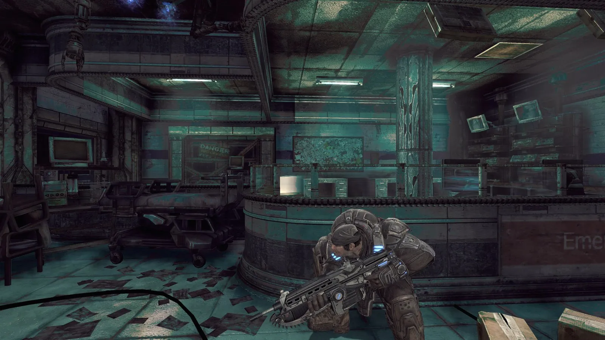
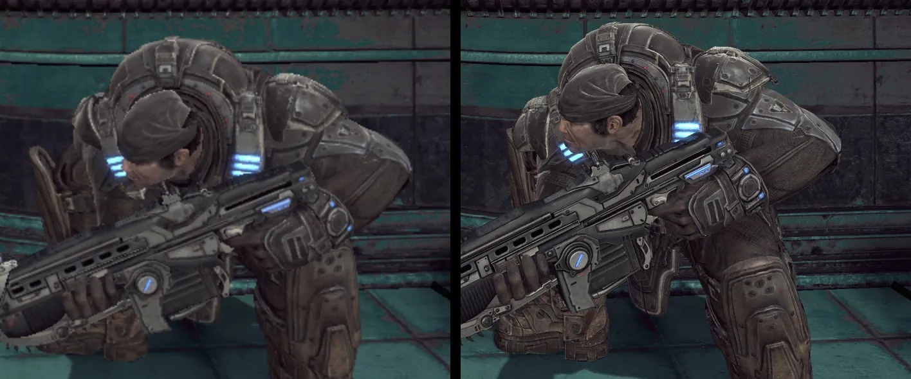
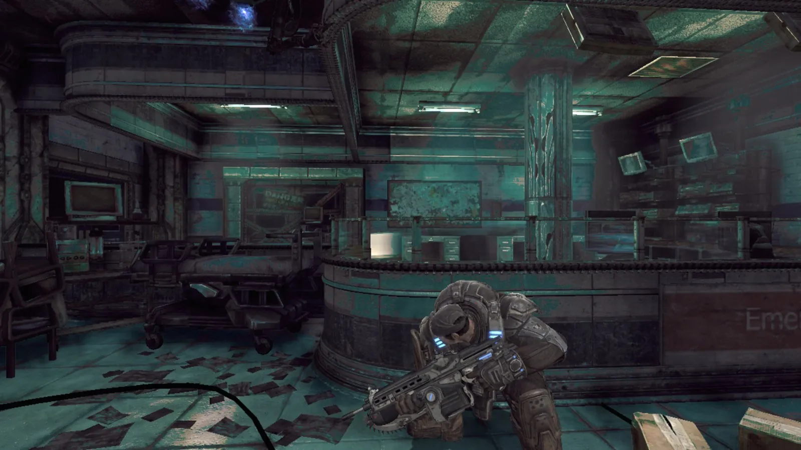
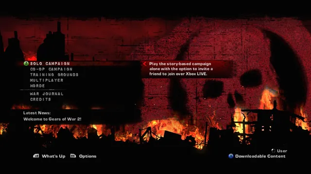
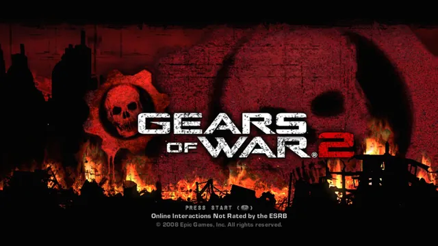
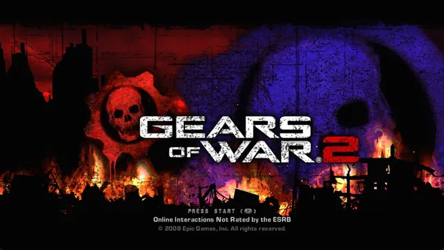
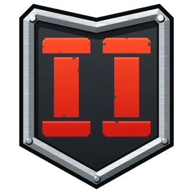

Unofficial fan port · v0.1.0
Gears of War 2 — Native PC port
The retail Xbox 360 game, statically recompiled to native x64 code for Windows. Not an emulator. You bring your own copy of the game; the download contains none of it.
- Windows 10/11 x64
- DirectX 12 GPU
- Your own retail copy

Recompiled, not emulated
The game's code, translated once
Emulators translate a console's code while the game runs. This port does that work ahead of time, so on your PC the game is an ordinary Windows program.
-
Xbox 360 · PowerPC
The retail executable
The game's
default.xexholds code for the Xbox 360's PowerPC processor. -
Build time · ReXGlue SDK
Recompiled ahead of time
The ReXGlue code generator turns the game's functions into C++, which is compiled to native x64 code. No CPU emulator runs while you play.
-
Your PC · x64
gow2.exe
A native Windows program. The ReXGlue runtime, derived from Xenia, stands in for the console's system and graphics, and the game's data comes from your own copy.
In the zip (v0.1.0)
- gow2.exe and runtime DLLs
- gow2.toml (settings)
- tools\texpack.py
- LICENSE, README, notices
You bring
- default.xex
- GearGame\
- dumped from your own retail disc
The packaging script stops if a game file (default.xex, .xxx, .tfc or .bik) would end up in the zip.
An earlier fan port, “Hollow”, was built from a leaked 2008 development build. This one runs the complete retail game.
Screenshots
Captured in the port
Every screenshot shows the game running in this port on Windows. Select one to open it at full size.








On PC
What the port adds
Everything is a setting in gow2.toml, next to the exe. Command-line flags such as --resolution_scale=3 override it.
# gow2.toml (defaults)
fullscreen = true
resolution_scale = 2 # 1 = 720p, 2 = 1440p, 3 = 4K
present_effect = "bilinear" # or "fsr", "cas"
gow2_unlock_fps = false # lifts the 30 fps cap
gow2_aniso16 = true # 16x anisotropic filtering
texture_replace = false # load your texture pack-
1440p by default, 4K internal
resolution_scalerenders the game at a multiple of its original 720p: 2 = 1440p (the default), 3 = 4K. In Act 1 at 1440p the development PC (Ryzen 9 7900X3D, Radeon RX 7800 XT) averages about 90 presented frames per second, 1% low 55. -
FSR 1 and CAS sharpening
Built with AMD FidelityFX.
present_effect = "fsr"renders at a lowerresolution_scaleand upscales with FSR 1 plus sharpening;"cas"only sharpens. From 720p to 1440p with FSR 1: about 85 fps in Act 1. -
Texture packs
Dump the game's textures from your own copy (
texture_dump = true), upscale them with any tool, and load them back (texture_replace = true). The release includestools\texpack.pyto convert between DDS and PNG. Packs contain only your reworked files, never the game's.
Replacement test: one title-screen texture swapped for a recoloured 2048×2048 version. -
Community game patches
Correct character lighting, a bigger texture pool with less pop-in, 16x anisotropic filtering, ambient occlusion and depth of field that stay clean at higher resolutions, and an optional 30 fps cap unlock. From xenia-canary/game-patches by illusion and boma, each behind its own setting.
gow2_black_shading_fixgow2_texture_streaming_fixgow2_unlock_fps -
Keyboard, mouse and controllers
W A S D and the mouse, with fire and aim on the mouse buttons. A controller works at the same time. Every binding is in
gow2.toml. Mouse look still needs work in 0.1.0; see Status. -
Open source
The project's own code is BSD-3-Clause. You can build it from source with your own copy of the game.
Status
Act 1 is playable. The rest is in progress.
v0.1.0 · released 14 Oct 2026
Works now
- The retail game boots to the menus
- Act 1 playable with keyboard and mouse or a controller
- Native 1440p, or 4K internal
- FSR 1 upscaling and CAS sharpening
- Community game patches
- Texture packs: dump and replace
Not yet
- Mouse look that feels like a PC game (fix ships in 0.1.1)
- The full campaign: only Act 1 has been played
- FSR 4, FSR 3.1 and DLSS: built in, not active for this game yet
- System Link (LAN Horde and Versus): socket layer fixed, sessions not done
- Linux and Android builds
Known issues in 0.1.0
- Mouse look feels wrong. The game ignores stick movement under 30%, so slow mouse movement is lost. The fix is already in the repository and ships in 0.1.1 once it is tested in game.
- Button prompts show Xbox buttons. They do even when you play with the keyboard.
- Green-looking lighting. It has been reported on one PC and could not be reproduced yet. Screenshots in an issue help.
- DLSS is not bundled. NVIDIA's license keeps it out of the release; NVIDIA users can add
nvngx_dlss.dllthemselves.
The full plan, from the complete campaign to Linux, Android and co-op beyond two players, is in the roadmap.
Install
From your disc to gow2.exe
How to play Gears of War 2 on PC with this port, step by step.
-
Dump your own disc
Extract your retail Xbox 360 copy of Gears of War 2 (title ID
4D53082D) to a folder that containsdefault.xexandGearGame. For example, unpack your ISO with xdvdfs:xdvdfs unpack "Gears of War 2.iso" C:\Games\GoW2 -
Download and unzip
Get the zip from the latest release and unzip it anywhere. Each release lists the zip's SHA-256 so you can check the download.
Download the latest release -
Run gow2.exe
The first launch asks for your game folder and remembers it. You can also pass the folder directly:
gow2.exe --game_data_root="C:\Games\GoW2"Settings live in
gow2.tomlnext to the exe.
Keyboard and mouse controls
| Move | W A S D |
|---|---|
| Look | Mouse, or the arrow keys |
| Fire / aim | Left / right mouse button |
| Cover, roadie run, roll | Space |
| Melee, chainsaw (hold) | F or V |
| Use, pick up, revive | E |
| Reload | R |
| Point of interest | Q |
| Tactical display | G |
| Zoom | Middle mouse button or Z |
| Weapons | 1 to 4 |
| Pause / back | Enter or Esc / Tab |
FAQ
Questions before you download
Is it legal? Do I need my own copy of the game?
You need your own retail Xbox 360 copy of Gears of War 2. The repository holds only this project's own code, and the release contains no game files or game data: everything the game needs is read from the copy you dumped yourself.
Do not pirate the game. Builds or packs that include files from the game are not part of this project.
Is this an emulator?
No. Emulators such as Xenia translate the console's code while the game runs. Here the game's code was recompiled ahead of time to native x64 code with the ReXGlue SDK, so gow2.exe is a Windows program. The ReXGlue runtime, derived from Xenia, provides the Xbox 360 system and graphics layer the game expects.
What PC and GPU do I need?
Windows 10 or 11 (64-bit) and a GPU with DirectX 12. The port is developed on a Ryzen 9 7900X3D with a Radeon RX 7800 XT, which averages about 90 fps in Act 1 at 1440p internal.
The temporal upscalers (FSR 4, FSR 3.1, DLSS) are built in but do not switch on for this game yet. If the image looks wrong on your GPU, please open an issue with a screenshot and your GPU model.
Can I play the whole campaign?
Not yet. Act 1 is playable; the rest of the campaign has not been played through. The complete campaign is the next goal on the roadmap.
Is there multiplayer, Horde or co-op?
Not yet. System Link (LAN play for Horde and Versus) is being implemented: the game's network calls are traced and its socket options now reach Windows correctly, but sessions are not implemented. Split-screen co-op is part of the full-campaign goal.
Is there an Android or Linux version?
Not a playable one. On Android, the app shell runs on a Samsung Galaxy S25 Ultra with a placeholder library, and an APK with the game's libraries builds, but it has not run on a phone yet. The plan is in docs/ANDROID.md.
A Linux x64 build with Vulkan is planned as the first non-Windows target.
How is this different from the “Hollow” port?
Hollow was built from a leaked 2008 development build. This port runs the complete retail game, from your own disc.
Credits
Built on open work
- ReXGlue SDKRuntime and code generator, derived from Xenia. BSD-3-Clause.
- gears-judgement-recompGears of War: Judgment on ReXGlue; build tooling and the temporal upscalers come from it.
- XeniaThe Xbox 360 emulator the runtime is derived from.
- XenonRecompXbox 360 static recompilation by hedge-dev.
- xenia-canary/game-patchesCommunity patches by illusion and boma.
- AMD FidelityFX SDKFSR and CAS. MIT.

Bring your disc. Run it natively.
Free and open source. Read the README for every setting, and star the repository to follow the road to the full campaign.